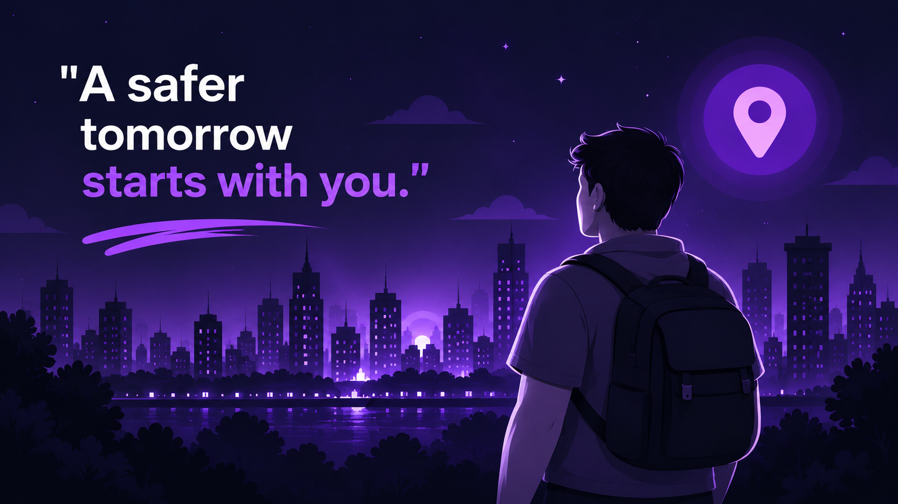

Emergency SOS
A central emergency entry point designed for quick access.
A personal safety companion designed to bring emergency actions, trusted contacts, and location-aware tools into one mobile experience.
Designed around people.Clear, accessible actions for moments that matter.

When a person feels unsafe, locating a trusted contact, communicating their situation, and sharing useful location information can take time. RakshaX explores a more unified way to reach personal-safety tools from a mobile device.
The goal is to make key actions easier to find, understand, and access when they are needed.
Explore the key capabilities represented in the current project screens.
A central emergency entry point designed for quick access.
Manage trusted people and available communication actions.
Location-related tools designed around user permission and consent.
A voice-assistance concept for supported app interactions.
Login, account creation, and verification screens.
Theme choices for different viewing preferences and environments.
Feature descriptions should be checked against the final working build. Emergency functionality depends on permissions, device settings, connectivity, and testing.
Switch themes, filter the screen collection, and select any image to view it larger.
RakshaX brings together a mobile interface and device-aware safety workflows. Use this section to explain the actual frameworks, APIs, permissions, and data flows used in your submitted build.
Conceptual overview — update to match your final implementation.
RakshaX aims to make personal-safety tools more approachable and easier to navigate.
Prioritizes clear, accessible actions.
Location and contact access should be transparent and permission-based.
Future work can focus on reliability, accessibility, testing, and responsible emergency workflows.
RakshaX · Personal emergency safety assistant
Back to top ↑